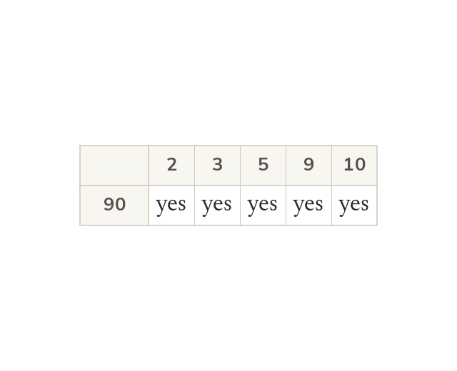
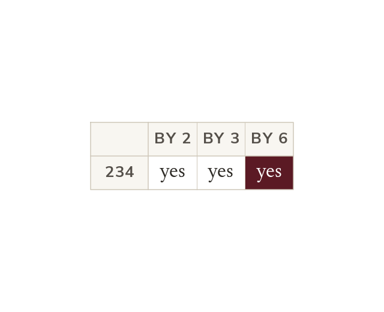

Checking whether a huge number divides exactly by testing every possibility would take forever - divisibility rules let you spot the answer in seconds, just by looking at the digits. Today adds three more rules (4, 6, 8) to the five you already use (2, 3, 5, 9, 10), so you can check every single-digit divisor except 7 without doing a single division.
By the end you’ll know…
Divisible means dividing exactly, with no remainder, so 'divisible by n' and 'has n as a factor' mean the same.
By 2: the last digit is even.
By 4: the last two digits form a multiple of 4.
By 8: the last three digits form a multiple of 8.
By 5: the last digit is 0 or 5.
By 10: the last digit is 0.
By 3: the digits add to a multiple of 3.
By 9: the digits add to a multiple of 9.
By 6: divisible by both 2 and 3.
Factors come in pairs, so testing divisors up to the square root finds every factor.
By the end you can
G3Apply the divisibility rules for 2, 3, 5, 9 and 10 to test a number and to find all the factors of a 2- or 3-digit number efficiently.
G3Apply the divisibility rules for 4, 6 and 8 to test a number and to find all the factors of a 2- or 3-digit number efficiently.
Work down the page at your own pace. Write every answer in your book first, then click to check it.
01
Do Now
About 5 minutes
1
Without a calculator, work out 6 × 4 and 24 ÷ 6.
6 × 4 = 24; 24 ÷ 6 = 4.
2
List the factor pairs of 24.
1 × 24, 2 × 12, 3 × 8, 4 × 6.
3
Is 24 odd or even?
Even (it ends in 4).
4
Write a multiplication equation and its matching division equation for 5 × 9 = 45.
5 × 9 = 45 and 45 ÷ 9 = 5 (or 45 ÷ 5 = 9).
Remember these?
LAST LESSONIs 21 prime? And what does 2⁴ mean?
No — 21 = 3 × 7. 2⁴ means 2 × 2 × 2 × 2 = 16.
LAST WEEKHow many lines of symmetry has a rectangle?
2 — through the midpoints of opposite sides.
LAST TERMWhat is the value of the 7 in 3.72?
7 tenths.
LAST YEARWhat is the value of the 4 in 348?
4 tens — 40.
02
Learn
Read each card, then follow the worked examples one step at a time.
The rules
Tests for 2, 5 and 10 look only at the last digit. Tests for 3 and 9 use the digit sum: 471 has digit sum 12.
A number is divisible by 2 if it's even; by 5 if it ends in 0 or 5; by 10 if it ends in 0; by 3 if its digit sum is divisible by 3; by 9 if its digit sum is divisible by 9.

Checking several rules on one number
Some numbers, like 90, need testing against several rules. Run through every rule, not stopping at the first that works.
some numbers need testing against more than one rule at once - e.g. checking whether 90 is divisible by 2, 3, 5, 9 or 10 means running through each rule in turn, not stopping at the first one that works.
WORKED EXAMPLE A
Is 486 divisible by 3? Is 486 divisible by 9?
Find the digit sum4 + 8 + 6 = 18
Divisible by 3yes, as 18 divides by 3
Divisible by 9yes, as 18 divides by 9
WORKED EXAMPLE B
Use divisibility rules to find all the factors of 90.
Is 315 divisible by 3? Is 315 divisible by 5? (Hint: check the digit sum for 3; check the last digit for 5.)
yes to both: the digits of 315 add to 9, which is in the 3 times table, and it ends in 5. (315 ÷ 3 = 105, 315 ÷ 5 = 63.)
YOUR TURN · b
Use divisibility rules to find all the factors of 60.
1, 2, 3, 4, 5, 6, 10, 12, 15, 20, 30, 60
03
Check your understanding
Pick an answer. If it's wrong, the feedback tells you which mistake it was.
Which of these numbers is divisible by 5?
Yes. It ends in 5, so it divides by 5.
Not quite. Check the last digit only: 253 ends in 3.
Not quite. It ends in 2. For 5, the last digit must be 0 or 5.
Not quite. Check the last digit, not the first: 508 ends in 8.
Which of these numbers is divisible by 3?
Yes.2 + 4 + 6 = 12, which divides by 3.
Not quite.11 isn't a multiple of 3. Close doesn't count.
Not quite. Being even is the test for 2. For 3, add the digits: 5.
Not quite. Add all three digits: 2 + 4 + 1 = 7, not a multiple of 3.
Which divisibility rule quickly tells you that 108 has 9 as a factor?
Yes. Digit sum 1 + 0 + 8 = 9, so 108 divides by 9.
Not quite. Even tells you about 2. For 9, add the digits.
Not quite. The last digit only works for 2, 5 and 10. For 9, add the digits.
Not quite. The rule saves the division: add the digits, 1 + 0 + 8 = 9.
04
Practise
mark as you go
Checkpoint. Use divisibility rules to find all the factors of 72. Say which rule gives each one. Show your working - I'll check it before you move on.Show your teacher before you go on
05
Learn
Read each card, then follow the worked examples one step at a time.
Three more rules
By 4: the last two digits divide by 4. By 8: the last three digits divide by 8. By 6: it divides by both 2 and 3.
a number is divisible by 4 if the number made by its last two digits can be divided by 4; by 8 if the number made by its last three digits can be divided by 8; by 6 if it is divisible by both 2 and 3 (last digit even, and digit sum divisible by 3).

Why 6 needs two checks
6 = 2 × 3. So a number divisible by both 2 and 3 is divisible by 6. 234 passes both checks.
6 = 2 × 3, so a number divisible by both 2 and 3 is automatically divisible by 6 - that's why the rule for 6 combines the last-digit check (for 2) with the digit-sum check (for 3).
WORKED EXAMPLE C
Is 512 divisible by 4? Is 512 divisible by 8?
Test for 4the last two digits, 12 ÷ 4 = 3
Divisible by 4yes
Test for 8the last three digits, 512 ÷ 8 = 64
Divisible by 8yes
WORKED EXAMPLE D
Use divisibility rules to find all the factors of 96.
Test in turn96 divides by 2, 3, 4, 6 and 8, but not by 5, 9 or 10
Is 348 divisible by 4? Is 348 divisible by 6? (Hint: check the last two digits for 4; for 6, check it's divisible by both 2 and 3.)
yes to both: the last two digits, 48, divide by 4 (348 ÷ 4 = 87); and 348 is even with digits adding to 15, so it divides by 2 and by 3, which means it divides by 6 (348 ÷ 6 = 58).
YOUR TURN · d
Use divisibility rules to find all the factors of 120.
Pick an answer. If it's wrong, the feedback tells you which mistake it was.
Which of these numbers is divisible by 4?
Yes. The last two digits, 16, divide by 4.
Not quite. Check the last two digits: 14 ÷ 4 = 3.5.
Not quite. Check the last two digits: 26 ÷ 4 = 6.5.
Not quite. Use the last two digits, 06: 6 ÷ 4 = 1.5.
Which of these numbers is divisible by 8?
Yes. The last three digits, 240, divide by 8: 240 ÷ 8 = 30.
Not quite. For 8, check the last three digits: 244 ÷ 8 = 30.5.
Not quite. For 8, check the last three digits: 140 ÷ 8 = 17.5.
Not quite. Even isn't enough. 214 ÷ 8 = 26.75.
Which of these numbers is divisible by 6?
Yes.234 is even and 2 + 3 + 4 = 9 divides by 3, so it divides by 6.
Not quite. It's even, but 2 + 4 + 4 = 10 doesn't divide by 3.
Not quite. The digit sum works for 3, but 333 is odd, so not 6.
Not quite. Having a 6 in it doesn't count. 1 + 4 + 6 = 11, not a multiple of 3.
07
Practise
mark as you go
Checkpoint. Use divisibility rules to find all the factors of 144. Say which rule gives each one. Show your working - I'll check it before you move on.Show your teacher before you go on
08
Exit ticket
On paper, on your own, then check
1
Is 456 divisible by 2? By 4? By 8? Show your reasoning for each.
Divisible by 2 (ends in 6, an even digit). Divisible by 4 (last two digits 56, 56 ÷ 4=14). Divisible by 8 (last three digits 456, 456 ÷ 8=57).
2
Is 315 divisible by 3? By 6? By 9? Show your reasoning for each.
Divisible by 3 (digit sum 3+1+5=9, and 9 is divisible by 3). Divisible by 6? No - 315 is odd, so it fails the divisible-by-2 test even though it passes the divisible-by-3 test. Divisible by 9 (digit sum 9, divisible by 9).
3
Use divisibility rules to find all the factors of 84.